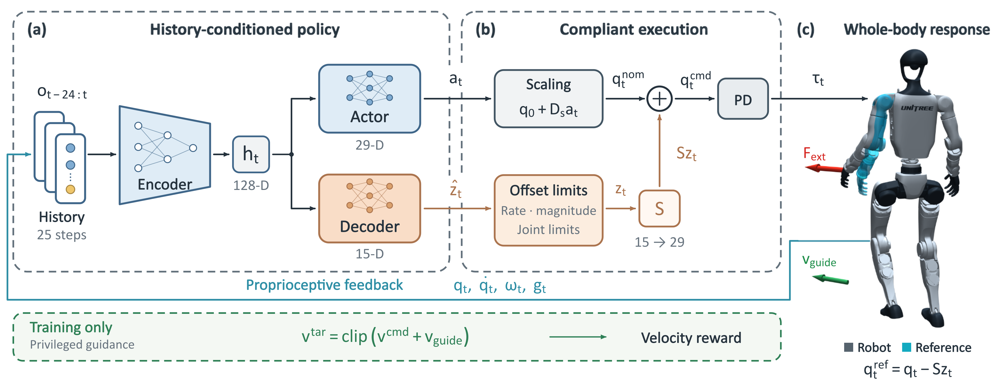
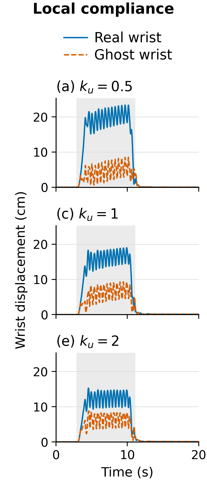
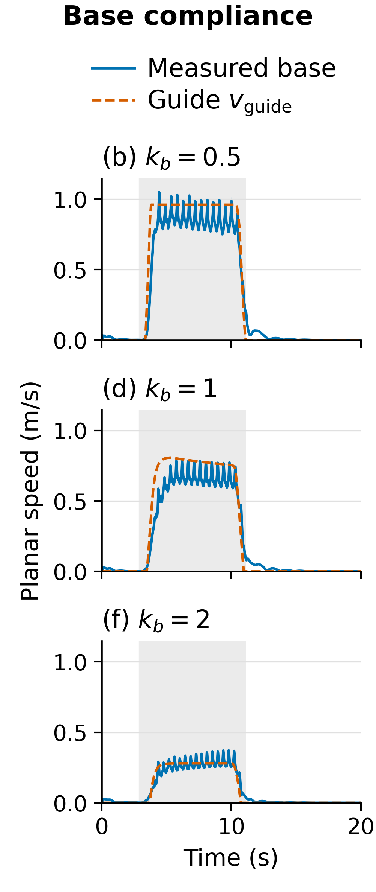
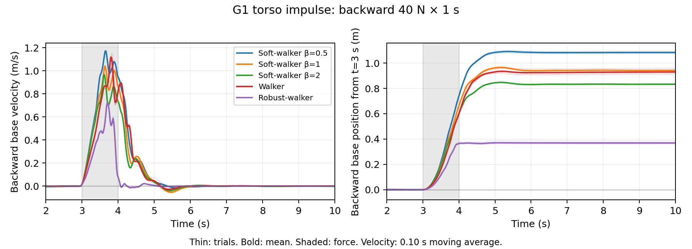

Specify the response
Admittance references define local yielding and base following, each with a tunable compliance gain.
Learning to move with physical guidance
01 / Overview
From a pull at the hand to a push at the shoulder.
Guide a humanoid through contact, with tunable yielding and coordinated motion.
Soft-Walker learns from analytical admittance references to connect local upper-body compliance with whole-body following. A shared interaction latent coordinates both responses, with separate controls for their compliance levels.
At deployment, the policy uses proprioceptive histories and user commands, without external-force measurements, explicit force estimation, or predefined task-space interaction targets.
Interactive / In your browser
Walk with WASD, turn with Q/E, and pull the upper body to feel its response. Every pull is limited to 40 N.
Best with a desktop keyboard and mouse. Open standalone demo ↗
02 / Method
A shared representation connects nominal locomotion with upper-body compliance.

Admittance references define local yielding and base following, each with a tunable compliance gain.
A privileged teacher and a proprioceptive student jointly learn locomotion and compliance.
Fine-tuning adapts the actor and decoder while the student controls the robot.
03 / Simulation results
Adjust local yielding and base following in the same trained policy, with fixed motor PD gains.

Increasing ku reduces wrist displacement under the same load. Joint offsets provide local yielding while the actor coordinates posture and stepping.
| ku | 0.5 | 1.0 | 2.0 |
|---|---|---|---|
| Wrist | 19.64 cm | 15.95 cm | 12.40 cm |
kb = 1. Ghost curves show wrist motion with executed compliance offsets removed.
Mean wrist displacement over 15–20 s at all three settings.

Increasing kb reduces planar speed under the same load. The deployed policy follows contact through proprioception.
| kb | 0.5 | 1.0 | 2.0 |
|---|---|---|---|
| Measured | 0.851 | 0.634 | 0.265 |
| Guide | 0.960 | 0.776 | 0.275 |
Speeds in m/s; ku = 1. Measured speeds retain a gap from the training reference.
Mean planar speed over 15–20 s at all three settings.
Simulation protocol. G1, left-wrist force (15, 15, 0) N, zero velocity command, and ten paired trials per setting. Loading amplitudes are averaged over 4–10 s; the shaded interval covers loading and release over 3–11 s.
Both controls retain some whole-body coupling; measured responses do not scale exactly with reference gains.
Release & recovery
Anchor-free recovery restores nominal velocity and posture, without requiring a return to the initial world position.
